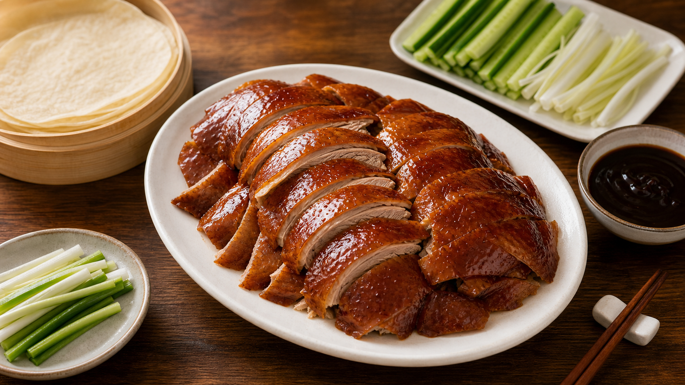
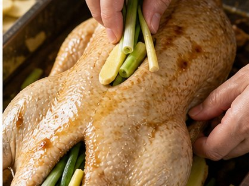
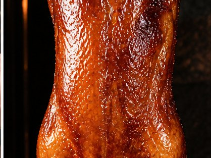
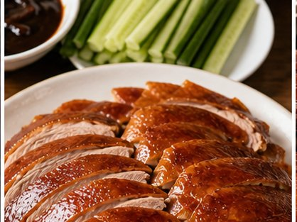
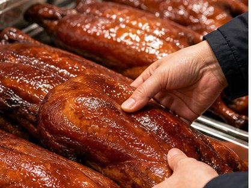

Reunion Dinner Recipe
Roast Duck
Celebration, hospitality and sharing

About This Dish
For Hong Kong, Cantonese and some Southeast Asian Chinese communities in the UK, roast duck may connect with Cantonese roast meat culture, restaurant meals and festive family gatherings.
Ingredients
- Whole duck (2 kg)
- Five-spice powder
- Soy sauce
- Rice vinegar
- Honey or maltose
- Ginger (5 slices)
- Spring onion (2)
- Salt
- Optional pancakes, cucumber and sauce
Method
-

Rub the duck with salt and 1 tsp five-spice powder. Place ginger and spring onions inside the cavity. Brush the skin with 2 tbsp soy sauce, 2 tbsp honey or maltose, and 1 tbsp rice vinegar. Leave uncovered in the fridge for at least 2 hours, or overnight, to help the skin dry. -

Roast at 180°C for about 70-90 minutes, depending on the size of the duck. Turn or baste halfway through until the skin becomes golden and crisp. -

Let the duck rest for 15 minutes before carving. Serve with rice, pancakes, cucumber, spring onion or plum sauce. -

For convenience, prepared roast duck may also be purchased from Chinese restaurants or supermarkets.
Allergens
- Soy
- Gluten, if served with pancakes or wheat-based sauce
Please check product labels carefully, especially for sauces and prepared ingredients.